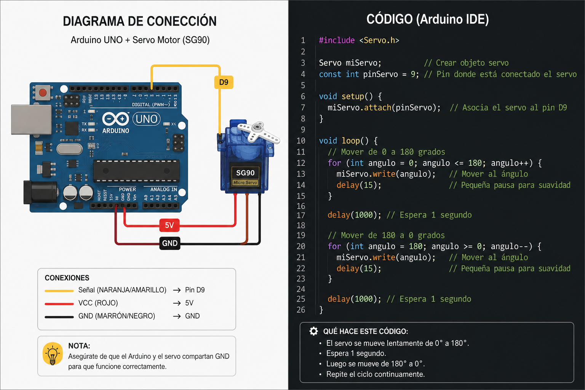

Fotoresistencia y 6 LEDs
Encendido automático dependiendo de la luz
📋 Descripción
Los 6 LEDs se encenderán de forma progresiva cuando haya poca luz y se apagarán cuando haya mucha luz, utilizando una fotoresistencia (LDR). Cuanto menos luz haya, más LEDs se activan.
🛠️ Materiales (pulsa para resaltar)
- 💡 Fotoresistencia (LDR)
- 🔴 LED x6 (distintos colores)
- ⚡ Resistencia 220Ω x6 (para LEDs)
- 🔧 Resistencia 10kΩ (para LDR)
- 🧱 Protoboard
- 🔌 Cables (jumpers)
- 🤖 Arduino UNO
- 💻 Cable USB para Arduino
Conexión de la LDR
Conecta la fotoresistencia a 5V y al pin A0.
Agrega una resistencia de 10kΩ a GND (divisor de voltaje).
Conexión de los 6 LEDs
LED 1 → pin digital 3 → resistencia 220Ω → GND
LED 2 → pin digital 4 → resistencia 220Ω → GND
LED 3 → pin digital 5 → resistencia 220Ω → GND
LED 4 → pin digital 6 → resistencia 220Ω → GND
LED 5 → pin digital 7 → resistencia 220Ω → GND
LED 6 → pin digital 8 → resistencia 220Ω → GND
Funcionamiento progresivo
El Arduino lee la luz desde la LDR.
Mucha luz → todos apagados.
Poca luz → se encienden 1 a 6 LEDs de forma progresiva.
Sin luz → los 6 encendidos al mismo tiempo.
🎬 Video del Proyecto

💻 Código — 6 LEDs progresivos
📷 Foto del Código

Asegúrate de que el archivo sea .png
y esté en la misma carpeta que este HTML.